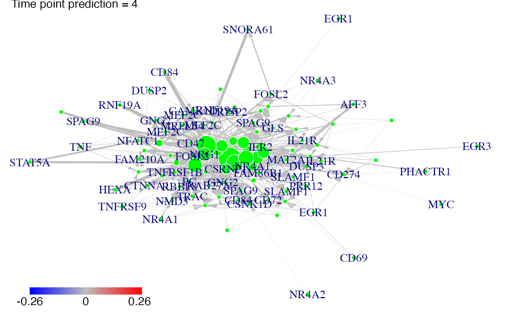
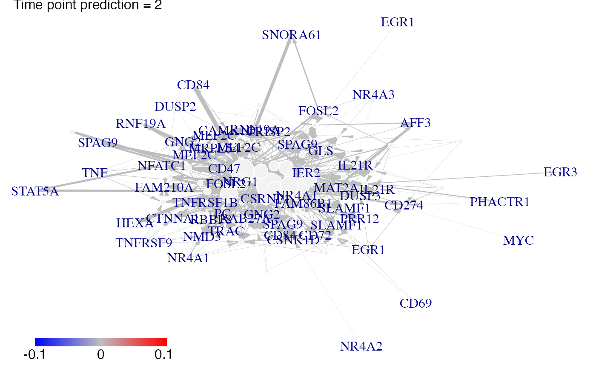

Prediction of the gene expressions after a knock-out experience for cascade networks.
# S4 method for micro_array predict( object, Omega, act_time_group = NULL, nv = 0, targets = NULL, adapt = TRUE )
Arguments
| object | a micro_array object. |
|---|---|
| Omega | a network object. |
| act_time_group | [NULL] vector; at which time the groups (defined by sort(unique(group))) are activated ? |
| nv | [=0] numeric ; the level of the cutoff |
| targets | [NULL] vector ; which genes are knocked out ? |
| adapt | [TRUE] boolean; do not raise an error if used with vectors |
Details
The plot of prediction of knock down experiments (i.e. targets<>NULL) is still in beta testing for the moment.
Author
Bertrand Frederic, Myriam Maumy-Bertrand.
Examples
# \donttest{ data(Selection) data(infos) pbst_NR4A1 = infos[infos$hgnc_symbol=="NR4A1", "affy_hg_u133_plus_2"] pbst_EGR1 = infos[infos$hgnc_symbol=="EGR1", "affy_hg_u133_plus_2"] gene_IDs = infos[match(Selection@name, infos$affy_hg_u133_plus_), "hgnc_symbol"] data(networkCascade) #A nv value can chosen using the cutoff function nv = .02 NR4A1<-which(is.element(Selection@name,pbst_NR4A1)) EGR1<-which(is.element(Selection@name,pbst_EGR1)) P<-position(networkCascade,nv=nv) #We predict gene expression modulations within the network if NR4A1 is experimentaly knocked-out. prediction_ko5_NR4A1<-predict(Selection,networkCascade,nv=nv,targets=NR4A1,act_time_group=1:4) #Then we plot the results. Here for example we see changes at time points t2, t3 ans t4: plot(prediction_ko5_NR4A1,time=2:4,ini=P,label_v=gene_IDs)#We predict gene expression modulations within the network if EGR1 is experimentaly knocked-out. prediction_ko5_EGR1<-predict(Selection,networkCascade,nv=nv,targets=EGR1,act_time_group=1:4) #Then we plot the results. Here for example we see changes at time point t2, t3 ans t4: plot(prediction_ko5_EGR1,time=2:4,ini=P,label_v=gene_IDs)# }